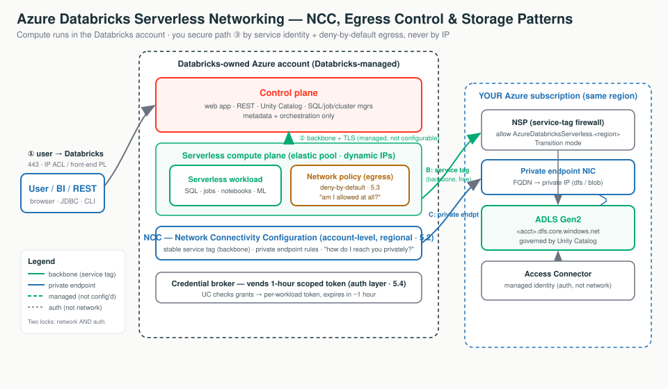

Think of serverless compute like a ride-share instead of a car you own. A car shows up on demand and leaves after - you never own the plate, so you can't pin a sticker on it. You secure it by trusting the service and controlling where it's allowed to drive.
VMs in your VNet. You know the plate (subnet / NAT IP) and allowlist it.
VMs in Databricks' account. No fixed IP, no subnet to peer to.
The loading dock + approved-courier list: how serverless reaches your resources privately.
The exit turnstile: whether an outbound call is allowed at all (deny-by-default).
The trusted backbone lane into your firewalled storage.
The keycard: a 1-hour scoped token, separate from network reachability.

Each tab below has its own clickable whiteboard: Three paths → Why It Differs, NCC private path → NCC, Two locks → Storage Patterns. Open a tab, then click a box to see what it does in plain English.
Serverless compute runs in Databricks' account, not yours. So the classic toolkit (peering, NSG, UDR, static NAT IP) doesn't apply. You secure the one path you still own - compute to your storage - and the control-plane hop is already private (backbone + TLS).
Serverless just means Databricks runs the computers, not you - like taking a ride-share instead of owning a car. Because the car isn't yours, you can't peer to "your network" (there isn't one) and you can't allowlist its number plate (a fixed IP), because a different car shows up each time.
In classic, the cluster VMs live in your subscription, inside the VNet you injected. In serverless, the VMs live in Databricks' account, in a region that matches your workspace. You submit a query; compute spins up in seconds from a warm pool and tears down after. You never see a VM, subnet, or IP.
Click each box to see what travels on each path - only path 3 (compute to your storage) is yours to configure.
Serverless is drawn from a shared, elastic pool; Databricks rotates outbound IPs as it scales. So:
The construct exists because the IP doesn't: you trust the AzureDatabricksServerless service tag
(auto-updating) or a private endpoint via NCC.
| Path | What it is | Serverless |
|---|---|---|
| (1) user -> Databricks | You log in to the control plane | Unchanged - IP ACL, Entra ID conditional access, front-end Private Link |
| (2) compute <-> control | Internal Databricks hop | Always backbone + TLS, never public, not configurable |
| (3) compute -> your storage | Reaching your data | The only path you configure - NCC + egress policy |
The control-plane to serverless hop is not a setting. If asked "how do I encrypt/privatize that hop," the answer is "Databricks already does - backbone + TLS, by design."
"Serverless removes the VNet, CIDR, and IP-allowlisting work entirely. There is no cluster IP to give you, because the compute is ours, not yours. You secure it by service identity and deny-by-default egress, not by chasing an IP."
Since serverless lives in a building you don't own, the NCC is how you tell that building which of your private resources it's allowed to reach, and over which private lane. Think of it as registering an approved-courier list at the front desk - you can't fit your own door, but you can say who gets in.
An account-level networking config you create once and attach to workspaces in the same region.
A name (not an IP) your storage firewall can trust, so it lets serverless in over the backbone.
A request to drop a private network door from serverless into your resource, which you then approve.
An NCC is an account-level, regional Databricks object you create in the Account Console and attach to one or more workspaces. It is the single control point for how serverless compute in that region reaches your private Azure resources.
Click each box to see how serverless reaches your firewalled storage privately.
AzureDatabricksServerless service tag you allowlist on a storage firewall, over the Azure backbone.| Fact | What to remember |
|---|---|
| Scope | Account admin creates it; scoped to one region; only same-region workspaces can attach |
| After attaching | Wait ~10 minutes, then restart running serverless resources |
group_id | dfs = data path (and UC model logging); blob = blob access (model-serving artifacts); one per rule |
| PE approval | Starts PENDING; you approve on your resource -> ESTABLISHED; expires after 14 days unapproved |
| Limits | 10 NCCs/region, 100 PEs/region, 50 workspaces/NCC; NCC + workspace co-regional |
"Classic VNet injection is your house with your own locks. Serverless is a serviced office building you don't own - the NCC is the building's loading dock and approved-courier list. You can't fit your own door, but you register which couriers (private endpoints) and backbone lanes (service tag) may reach your stockroom."
Private endpoint rules bill per hour per rule regardless of state, plus per-GB. The service tag over the backbone is free of data-processing charges. Don't default to PEs "to be safe" - reserve them for actual Private Link mandates.
Egress just means outbound traffic - serverless trying to call out to somewhere. A network (egress) policy is the list of which destinations are allowed, like a building's exit turnstile that only opens for names on an approved list. By default it's deny-by-default: nobody leaves unless you've named where they can go.
Serverless runs in Databricks' account - you can't put an NSG or Azure Firewall in front of it. The network policy is your egress firewall for that plane, and the primary data-exfiltration control. It sets a network access mode for the workspaces it's attached to.
| Mode | Behaviour |
|---|---|
| Full access | Unrestricted outbound internet (the open default) |
| Restricted access | Deny-by-default: blocked unless the destination is a UC external location, or an FQDN / storage account you explicitly listed |
Direct cloud storage access from user code (UDFs, REPLs, notebook Python) is prohibited by default. Route reads through UC securables. Escape hatch: add the storage account's exact FQDN - never the base domain *.dfs.core.windows.net (that opens every storage account in the region).
Stage a restricted policy and log violations without blocking. Violations land in system.access.outbound_network with access_type = DRY_RUN_DENIAL; real blocks show DROP.
"NCC is the private hallway to your storage. The restricted policy is the exit turnstile: by default nobody leaves, and only names on the approved list get through. NCC asks 'can I reach it privately?'; the policy asks 'am I allowed to reach it at all?' - both must say yes, even over a private endpoint."
After changing access/dry-run mode you must restart serverless compute. Account-level network-policy APIs need an account-admin OAuth token (PATs are rejected).
Your data sits in firewalled storage (ADLS Gen2) that blocks strangers by default. The catch: serverless has no fixed IP, so the usual "allowlist these addresses" trick won't work. Instead you tell the storage firewall to trust serverless by name - either by trusting the service tag (a backbone lane Azure keeps updated) or by giving serverless a private endpoint (its own private door into your network).
AzureDatabricksServerless.<region> so traffic rides the Azure backbone; free, no fixed IP needed.When serverless reaches your ADLS Gen2, traffic crosses from Databricks' network into yours, and your storage firewall has to be told to trust it. Three patterns, least to most locked-down:
Click each box to see why access needs both network reachability and authorization.
| A. Public | B. Service tag (NSP) | C. Private endpoint (NCC) | |
|---|---|---|---|
| Storage firewall | Off | On (NSP, Transition) | On (PE-only optional) |
| What you allowlist | Nothing | AzureDatabricksServerless.<region> | A dedicated private endpoint |
| Path | Public IP | Azure backbone | Private IP (FQDN -> PE) |
| Cost | Lowest | Low (no data-proc charge) | Highest (per-hour per-rule + per-GB) |
| When | Dev / PoC | Default for prod | Private-link mandate only |
Every access succeeds only if both pass:
Storage Blob Data Contributor, with the call using a 1-hour scoped credential vended per-workload.No secrets to rotate, and - crucially - a managed identity can reach storage protected by network rules (trusted as a resource instance), which a service principal cannot.
Transition evaluates NSP rules first, then falls back to the storage firewall on no-match. Enforced mode bypasses the storage firewall for every service, breaking anything not also onboarded to the NSP.
"Two doors, two keys. The network pattern only opens the front door (reachability). The managed identity plus the 1-hour scoped token is the keycard (authorization). Open the wrong lock and you still can't get in. Keep your ADLS firewall on, trust the service tag over the backbone, and add private endpoints only when a regulator mandates Private Link."
Do not start by asking for the cluster IP. Start by asking which path you're on and which of the two locks is failing.
| Symptom | First Thing To Think |
|---|---|
| Classic reads firewalled ADLS, serverless can't | Check the network lock, not the grant - NSP trusting AzureDatabricksServerless.<region> or an ESTABLISHED PE? |
| NCC private endpoint never connects | Rule stuck PENDING? Nobody approved it on the storage side (expires after 14 days). |
| Rules applied but serverless still fails | Was serverless compute restarted after the attach/change (~10 min propagation)? |
| NCC missing from workspace dropdown | Is the NCC region == workspace region? |
| Jobs/notebooks fail outbound after enforcement | Query system.access.outbound_network for DROP - it names the exact FQDN/storage. |
| Model Serving won't deploy / log models | Check ML Build denials and the PE group_id - serving needs both blob and dfs. |
| UDF reading storage directly fails | Expected in restricted mode - move the read to a UC securable. |
| Azure bill creeping up | PEs bill per hour per rule regardless of state - delete unused rules. |